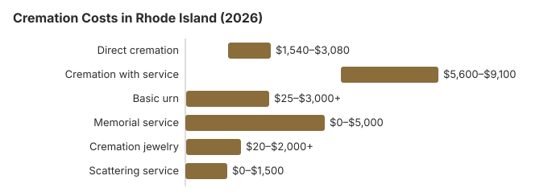

Cremation Costs in Rhode Island (2026)
With a cremation rate of 58%, cremation is the most popular disposition choice in Rhode Island.
Types of Cremation in Rhode Island
Direct Cremation
- Least costly route in Rhode Island
- No ceremony ahead of cremation
- Taken to the crematory directly
- Relatives receive the cremated remains
- Memorial whenever the family chooses
Cremation with Service
- Service with the body, then cremation
- A visitation can be held
- Often in a chapel or parish church
- Simple urn usually included
- Closer to the usual funeral and burial format
Rhode Island Cremation Prices by Item
| Item | Average Cost | Range |
|---|---|---|
| Direct cremation | $2,200 | $1,540 – $3,080 |
| Cremation with service | $7,000 | $5,600 – $9,100 |
| Basic urn | $50 – $300 | $25 – $3,000+ |
| Memorial service | $500 – $2,000 | $0 – $5,000 |
| Cremation jewelry | $50 – $500 | $20 – $2,000+ |
| Scattering service | $200 – $600 | $0 – $1,500 |
How we got the Rhode Island figures: they are modeled, not gathered from Rhode Island crematories, so measure what providers tell you against them; they are estimates only, not quotes or advice. Read our method and the disclaimer.
State sources: Rhode Island Department of Health, Board of Funeral Directing/Embalming; R.I. Gen. Laws § 40-6-3.10; 218-RICR-20-00-3.

Checks to Make Before a Cremation in Rhode Island
Before choosing cremation in Rhode Island, check these points:
- No casket required:
How to Save on Cremation in Rhode Island
Rhode Island families can lower the cost with these steps:
- Ask several Rhode Island providers for their General Price Lists, then put the same items side by side.
- Ask about current turnaround: Crematory capacity around Providence can stretch turnaround to 10-14 days during peak periods. If timing matters for a memorial, confirm the specific return-of-ashes window in writing before choosing on price.
- Hold a memorial separately: A memorial at a church, park, or home costs a fraction of a funeral home ceremony (the Rhode Island table shows $4,800 between direct cremation and cremation with a service) and can be scheduled whenever the family is ready.
How Rhode Island Cremation Compares With the Region
Northeastern crematoria handling heavy volume, particularly around Providence, can process direct cremations in 3-5 business days, but the wait at boutique providers can stretch to 2 weeks. If timing matters, ask each Rhode Island provider for their current turnaround before choosing on price alone. The $2,200 direct cremation floor in Rhode Island sometimes reflects capacity pressure, not cost of service.
Cremation Resources
- Funeral Consumers AllianceNonprofit advocacy: compare cremation providers
- Cremation Jewelry GuideMemorial keepsakes and remembrance options
- Cremation vs. Burial CostsSide-by-side cost comparison
- Pet Cremation CostsOptions and prices for pet cremation and memorials
- Final Expense InsuranceCoverage options to help pay for cremation costs
Compare Funeral Costs
- Average Funeral Cost in 2026National cost breakdown with real prices
- Cremation vs. Burial Cost ComparisonSide-by-side price comparison to help you decide
- Funeral Cost BreakdownEvery line item explained: know what you're paying for
- Cheapest Funeral OptionsLower-cost alternatives, with typical price ranges
- Direct Cremation: Most Affordable OptionNFDA 2023 median $2,645 with a family-supplied container (latest available)
- How to Compare Funeral PricesStep-by-step guide to getting the best price
Frequently Asked Questions
What does cremation cost in Rhode Island in 2026?
Cremation in Rhode Island runs from roughly $2,200 for the simplest direct option up to about $7,000 when paired with a viewing or ceremony. Your final number depends on which tier you pick.
What types of cremation are available in Rhode Island?
Most Rhode Island providers offer direct cremation (no service) and cremation with a memorial or viewing. Rhode Island law does not authorize alkaline hydrolysis, and 2026’s House Bill 7070 on new disposition methods passed the House but stalled in Senate Judiciary, so a Rhode Island family would need an out-of-state facility.
What legal requirements apply to cremation in Rhode Island?
Yes. Under R.I. Gen. Laws § 23-3-18, no cremation may take place sooner than 24 hours after death, and the crematory needs two documents first: the burial permit and a cremation certificate signed by the state medical examiners.
If a Rhode Island death falls under the medical examiner or coroner, that office has to release the body before any cremation. Pacemakers, implanted defibrillators, and certain other implants are removed before a Rhode Island cremation; ask the provider whether removal is in its price.
Complaints about how a crematory or funeral home handled these steps go to the Rhode Island Department of Health, Board of Funeral Directing/Embalming (401-222-4998).
Is ash scattering legal in Rhode Island?
In most cases yes, but the specifics depend on where. Check Rhode Island local ordinances and any park-specific rules before proceeding. Some Rhode Island families choose a columbarium niche, urn burial (including at Rhode Island Veterans Memorial Cemetery for an eligible veteran), or memorial jewelry to avoid the permitting question entirely.
Why is cremation so popular in Rhode Island?
In Rhode Island, cremation costs an estimated $6,800 less than a traditional burial and leaves the memorial date open; the state's 58% cremation rate is 5.4 points below the 63.4% national rate that NFDA projected for 2025.
What is the timeline for cremation in Rhode Island?
The cremation itself runs 2-3 hours in Rhode Island. A direct cremation ($2,200) is the fastest end-to-end because nothing but the 24-hour wait Rhode Island requires after death (R.I. Gen. Laws § 23-3-18) sits between death and cremation.
Do I have to skip the service if I choose cremation in Rhode Island?
A full-service cremation in Rhode Island means visitation and a ceremony first, with cremation taking the place of burial; a memorial after cremation is just as common and leaves the venue and date open. Among the Rhode Island prices above, only direct cremation, at $2,200, leaves the service out. The paperwork deadline is separate from the cremation wait: R.I. Gen. Laws § 23-3-18(a) has the funeral director who first takes custody prepare the burial-transit permit within seven calendar days of death and before final disposition.
More for Rhode Island
What the Rhode Island cremation certificate costs
Rhode Island's cremation certificate comes from the state's Office of the State Medical Examiners, and the fee is set in the Department of Health's statewide fee schedule: $30 for cremation certificates and statistics. Autopsy reports cost $40 under the same schedule (R.I. Gen. Laws § 23-1-54 and § 23-4-13; checked October 29, 2026). Cities and towns, and the Department of Human Services, do not pay these medical examiner fees.
The funeral director has to have the completed certificate in hand before the body leaves for the crematory, so the request usually goes in as soon as the death certificate is ready. Funeral homes normally list the $30 as a cash advance item.
Cremation rules and help in Rhode Island
The licensing office for cremation providers in Rhode Island is the Rhode Island Department of Health, Board of Funeral Directing/Embalming; its number is 401-222-4998.
Because Rhode Island is not on the Funeral Consumers Alliance list of nine states that restrict family-directed care, the family may deal with a Rhode Island crematory directly once the cremation permit has been issued.
What the law says about timing: Rhode Island bars cremation until 24 hours after death and requires a burial permit plus a cremation certificate from the state medical examiners (R.I. Gen. Laws § 23-3-18).
Rhode Island's GPA-Burial program pays up to $900 toward the funeral home's charges and up to $150 for the crematory fee, paid directly to the providers, when DHS receives the application within 30 days of death. (Source: R.I. Gen. Laws § 40-6-3.10; 218-RICR-20-00-3.) The $255 Social Security death payment to a qualifying Rhode Island spouse or child would cover only part of the $2,200 direct cremation estimate above.
Cremated remains of an eligible Rhode Island veteran can be placed in a VA national cemetery columbarium or in-ground site at no charge for the space. The one option in Rhode Island is Rhode Island Veterans Memorial Cemetery (401-268-3088). See cem.va.gov.
Next steps for a cremation in Rhode Island
- Ask Rhode Island cremation providers to itemize transport, the container and the crematory fee before you choose one.
- Allow at least 24 hours after death in Rhode Island, plus time for the permit, before the cremation date.
- Send the Rhode Island DHS GPA-Burial application within 30 days so the $150 crematory fee is covered.
- Note the board's number, 401-222-4998, before you pay a cremation provider.